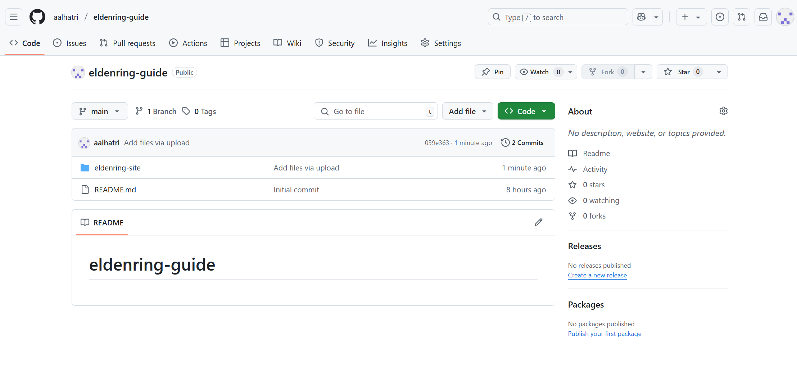
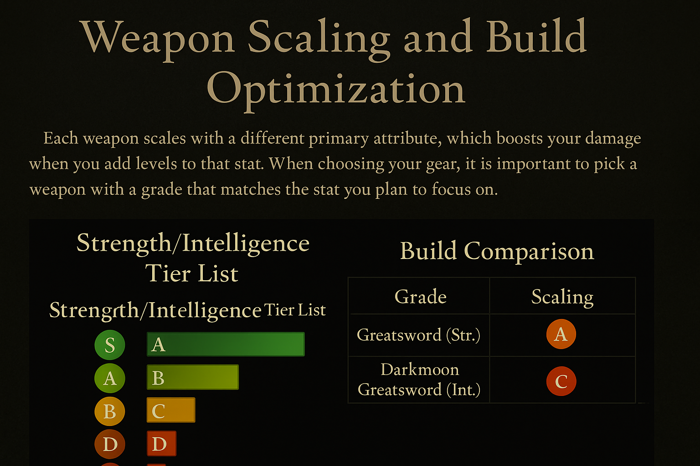
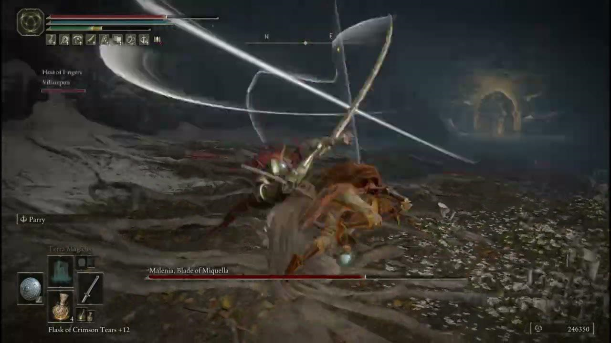
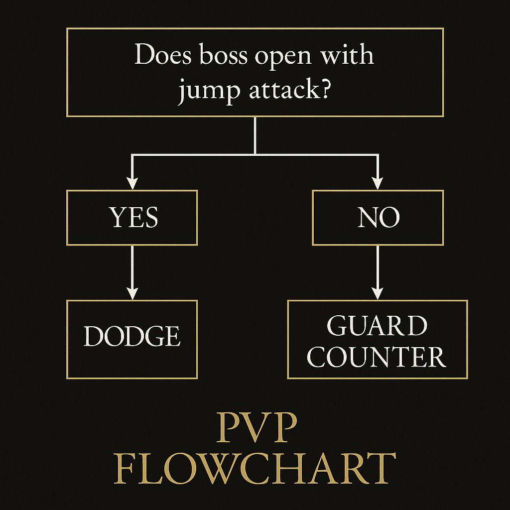

This site is designed to support intermediate players with in-depth strategies, tutorials, and breakdowns of Elden Ring’s most challenging combat mechanics.
A look at the homepage layout and menu interface in the dark fantasy aesthetic.
This section compares Strength vs. Intelligence scaling for various weapons.
This frame shows how to properly dodge Malenia’s Waterfowl Dance attack.
Example of a tactical decision tree created with Canva for real-time PvP strategy.
A still from a parry tutorial video showing a player countering a Crucible Knight.

The site layout features a black/red/gold palette, styled to match Elden Ring’s atmosphere.